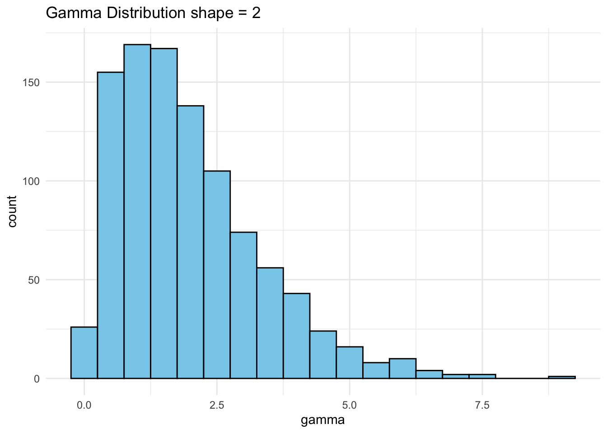

List of 3
$ a : int [1:10] 1 2 3 4 5 6 7 8 9 10
$ beta : num [1:7] 0.0498 0.1353 0.3679 1 2.7183 ...
$ logic: logi [1:4] TRUE FALSE FALSE TRUE
class(xl)
[1] "list"
Tibbles - tidyverse dataframes
The tidyverse is an opinionated set of packages that assumes common interfaces and a “tidy” data philosophy that centers around a modified dataframe called a tibble. For more details, see tidyverse.org.
xd1 <-tibble(x =1:1000, y = letters[1:1000], z =rep(c(TRUE, FALSE), 500))xd1
# A tibble: 1,000 × 3
x y z
<int> <chr> <lgl>
1 1 a TRUE
2 2 b FALSE
3 3 c TRUE
4 4 d FALSE
5 5 e TRUE
6 6 f FALSE
7 7 g TRUE
8 8 h FALSE
9 9 i TRUE
10 10 j FALSE
# ℹ 990 more rows
class(xd1)
[1] "tbl_df" "tbl" "data.frame"
dplyr packages - select, filter
dplyr is a tidyverse package for working with dataframes.
#xd1[, c("y", "z")] # data frame columns y and zxd1 |>select(y, z)
# A tibble: 1,000 × 2
y z
<chr> <lgl>
1 a TRUE
2 b FALSE
3 c TRUE
4 d FALSE
5 e TRUE
6 f FALSE
7 g TRUE
8 h FALSE
9 i TRUE
10 j FALSE
# ℹ 990 more rows
#xd1[xd1$x > 5, ] # subset data framexd1 |>filter(x >5)
# A tibble: 995 × 3
x y z
<int> <chr> <lgl>
1 6 f FALSE
2 7 g TRUE
3 8 h FALSE
4 9 i TRUE
5 10 j FALSE
6 11 k TRUE
7 12 l FALSE
8 13 m TRUE
9 14 n FALSE
10 15 o TRUE
# ℹ 985 more rows
#subset(xd1, x > 5 & z == TRUE) # subset data framexd1 |>filter( x >5, z ==TRUE)
# A tibble: 497 × 3
x y z
<int> <chr> <lgl>
1 7 g TRUE
2 9 i TRUE
3 11 k TRUE
4 13 m TRUE
5 15 o TRUE
6 17 q TRUE
7 19 s TRUE
8 21 u TRUE
9 23 w TRUE
10 25 y TRUE
# ℹ 487 more rows
#xds1 <- subset(xd1, x > 5, select = c(x, y)) # subset and select data framexd1 |>filter(x >5) |>select(x, y)
# A tibble: 995 × 2
x y
<int> <chr>
1 6 f
2 7 g
3 8 h
4 9 i
5 10 j
6 11 k
7 12 l
8 13 m
9 14 n
10 15 o
# ℹ 985 more rows
#xds2 <- subset(xd1, x > 5, select = -z) # subset and select data framexds2 <- xd1 |>filter(x >5) |>select(-z)xds2
# A tibble: 995 × 2
x y
<int> <chr>
1 6 f
2 7 g
3 8 h
4 9 i
5 10 j
6 11 k
7 12 l
8 13 m
9 14 n
10 15 o
# ℹ 985 more rows
`stat_bin()` using `bins = 30`. Pick better value with `binwidth`.
`stat_bin()` using `bins = 30`. Pick better value with `binwidth`.
`stat_bin()` using `bins = 30`. Pick better value with `binwidth`.
`stat_bin()` using `bins = 30`. Pick better value with `binwidth`.
Boxcox transformations are used to transform a predictor variable with non-normal distribution into predictor with normal distribution.
set.seed(20)df <-tibble( gamma =rgamma(1000, 2))ggplot(df, aes(gamma)) +geom_histogram(binwidth =0.5, fill ='skyblue', color ='black') +labs(title ="Gamma Distribution shape = 2") +theme_minimal()

library(e1071)skewness(df$gamma)
[1] 1.155639
df$gauss <-rnorm(1000)ggplot(df, aes(gauss)) +geom_histogram(binwidth =0.5, fill ='lightgray', color ='black') +labs(title ="Normal Distribution") +theme_minimal()
library(caret)
Loading required package: lattice
Attaching package: 'caret'
The following object is masked from 'package:purrr':
lift
bct <-BoxCoxTrans(df$gamma)df$gamma_xtrans =predict(bct, df$gamma)df |>ggplot(aes(x = gamma_xtrans)) +geom_histogram(binwidth =0.5, fill ="blue", color ="black") +geom_histogram(aes(x = gamma), binwidth =0.5, fill ="skyblue", alpha =0.5) +labs(title ="Histogram of Box-Cox Transformed gamma")
skewness(df$gamma_xtrans)
[1] -0.1014337
## handling 0 valuesdf_0 <- df |>select(gamma) |>bind_rows(tibble(gamma =0))bct2_fail <-BoxCoxTrans(df_0$gamma)bct2 <-BoxCoxTrans(df_0$gamma +0.0001)df_0$gamma_xtrans =predict(bct2, df_0$gamma)df_0 |>ggplot(aes(x = gamma_xtrans)) +geom_histogram(binwidth =0.5, fill ="blue", color ="black") +geom_histogram(aes(x = gamma), binwidth =0.5, fill ="skyblue", alpha =0.5) +labs(title ="Histogram of Box-Cox Transformed gamma with 0")
Principal Component Analysis
It is commonly used for dimensionality reduction by projecting each data point onto only the first few principal components to obtain lower-dimensional data while preserving as much of the data’s variation as possible.
Principal components are directions that have maximum variance when data is projected onto them and at the same time are uncorrelated with each other.
Principal components are linear combinations of original predictors.
# Example 1set.seed(100)x <-rnorm(1000)y <-rnorm(1000)z <-rnorm(1000)m <-matrix(data =c(x, y, z), nrow =1000, ncol =3)m_pca <-prcomp(m)str(m_pca)
List of 5
$ sdev : num [1:3] 1.08 1.02 0.96
$ rotation: num [1:3, 1:3] 0.398 0.384 -0.833 -0.917 0.204 ...
..- attr(*, "dimnames")=List of 2
.. ..$ : NULL
.. ..$ : chr [1:3] "PC1" "PC2" "PC3"
$ center : num [1:3] 0.01681 0.00415 -0.01491
$ scale : logi FALSE
$ x : num [1:1000, 1:3] -0.923 0.677 1.617 1.268 0.663 ...
..- attr(*, "dimnames")=List of 2
.. ..$ : NULL
.. ..$ : chr [1:3] "PC1" "PC2" "PC3"
- attr(*, "class")= chr "prcomp"